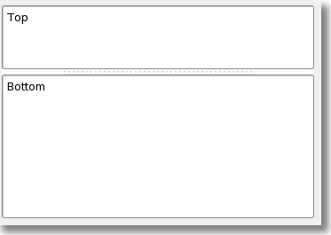
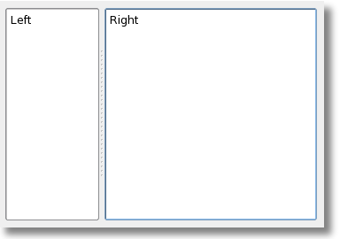

As mentioned in the previous section splitters enable the user to re-size area's of the screen and its contents, and there are two
types:

A Vertical Splitter is a container that lays out its children vertically, and that allows the user to resize them by dragging the boundary between them

A Horizontal Splitter is a container that lays out its children horizontally, and that allows the user to resize them by dragging the boundary between them.
EasyGP makes extensive use of splitters and will automatically save your resized screen area's on exit. If you find your self in a
section of EasyGP and the screen design looks a little odd, its possible you have accidentally moved a splitter right up to the top
or out to one edge, and hidden its contents - go take a look, grab the line and drag it back.
This help file you are reading now, has a vertical splitter separating the chapters/topics from the text you are reading - try
adjusting this as practice in using splitters.